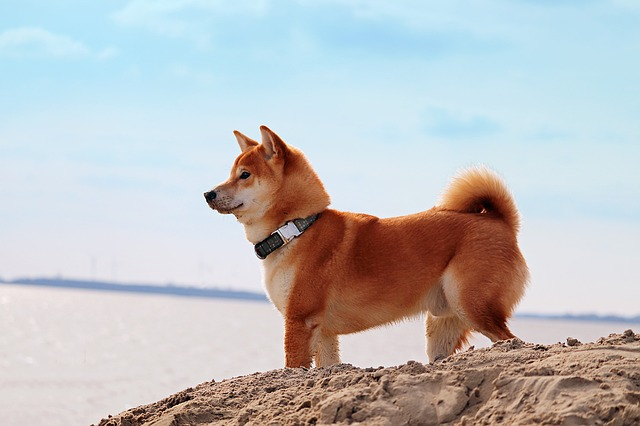
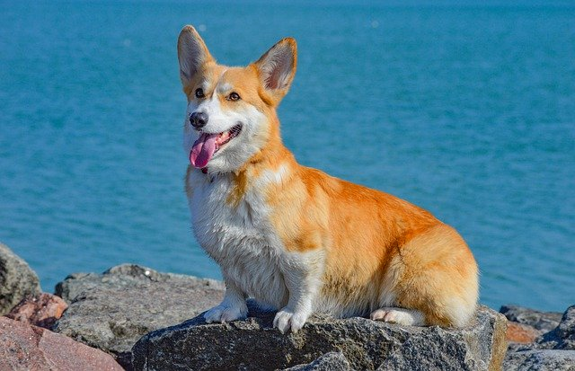

RASY
Poniżej znajdują się krótkie opisy oraz zdjęcia ras, które często możemy spotkać w memach i różnych zabawnych filmach.
| Zdjęcie | Rasa | Grupa | Pochodzenie | Wysokość w kłębie i waga |
Opis |
|---|---|---|---|---|---|
 |
Mops | ozdobne i do towarzystwa; małe molosowate |
Daleki Wschód | do 32cm 6-8kg |
uczuciowy, nieagresywny, sympatyczny, może mieć problemy z oddychaniem |
 |
Samojed | do towarzystwa, zaprzęgowe; szpice i psy pierwotne |
Europa Północna | 50-59cm 25-30kg |
bardzo wesoły i przyjazny (również dla obcych), bywa hałaśliwy |
|  | Shiba inu | do towarzystwa; szpice i psy pierwotne |
Japonia | 36-42cm 10-12kg |
charakterny, niezależny, ale także rodzinny |
|  | Welsh Corgi | pasterz, stróż, do towarzystwa; jamnikowate |
Wielka Brytania | 25-30cm 10-12kg |
uczuciowy, nieagresywny, sympatyczny, może mieć problemy z oddychaniem |